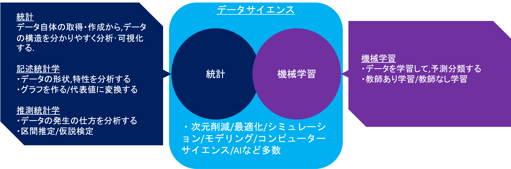
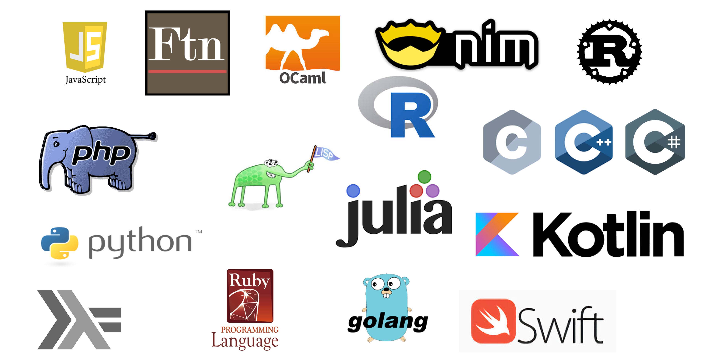
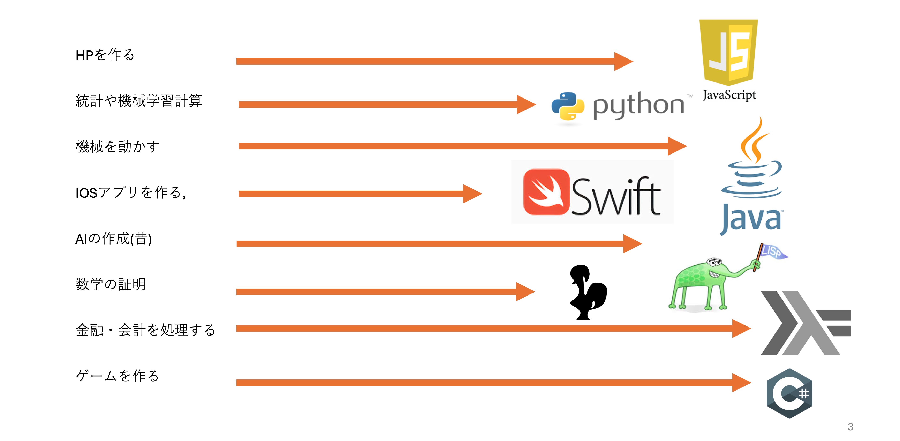
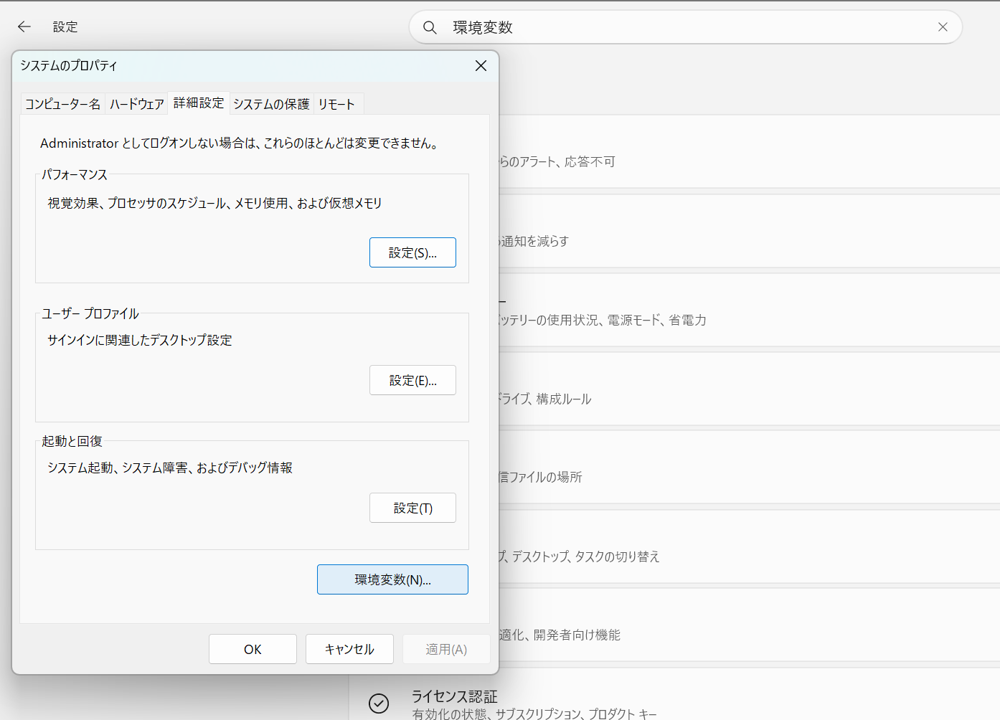
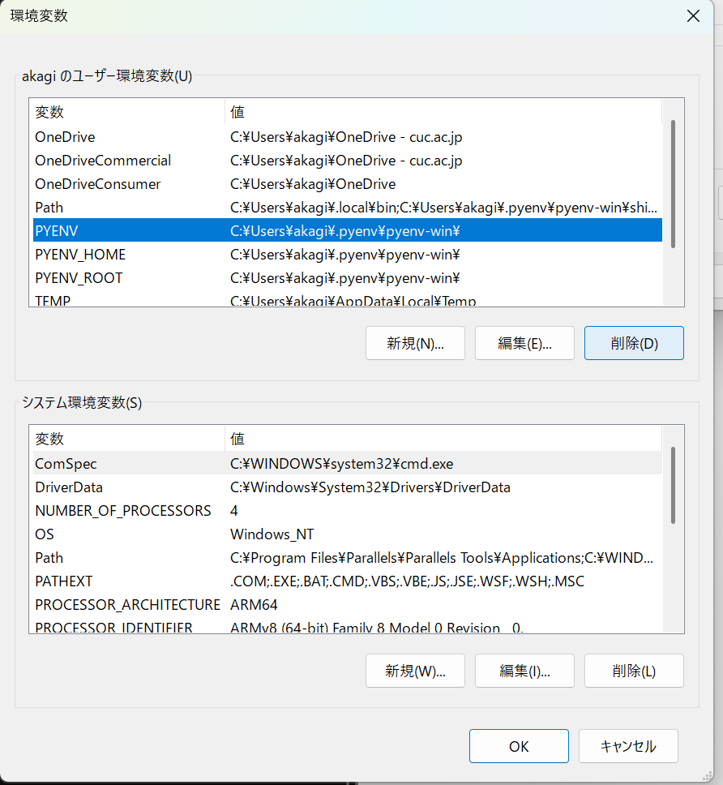
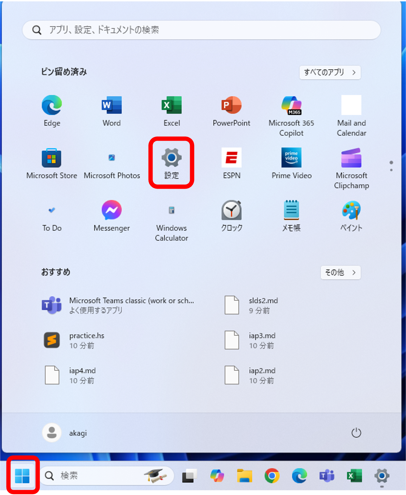
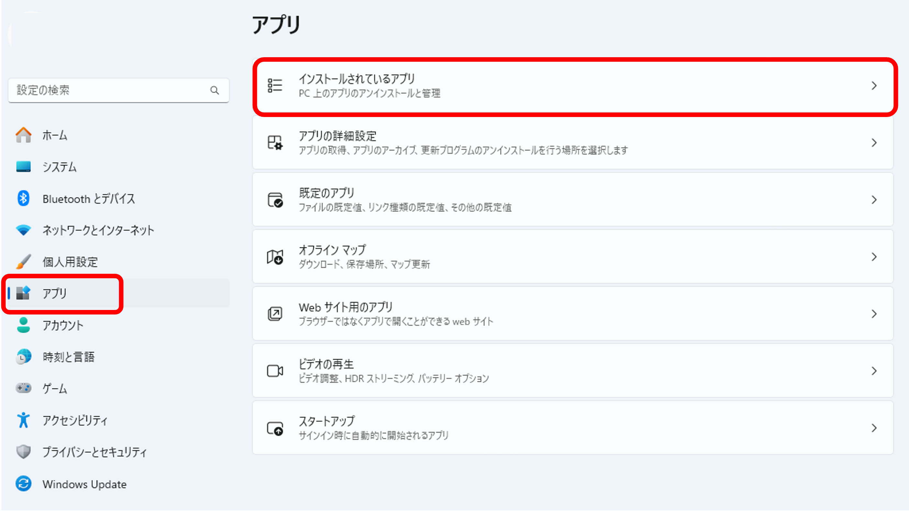
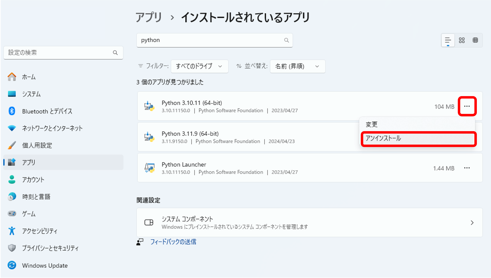

特別講義DS Ch3 Pythonと環境構築
資料
イントロダクション
データサイエンスは,データを利用して現象を発見したり,予測をする科学の総称です. データの作成やデータを分析する前の処理,利用するコンピュータ関連の技術なども対象となります.
データサイエンスと関連の深い分野/用語として統計や機械学習,AIがありますが,それらもデータサイエンスの一部とみなすことができます.
統計は,データ自体の取得・作成・集計から,データの構造を分かりやすく分析・可視化する学問です.機械学習は,データから予測モデルを作り,意思決定などに応用する学問です. 統計や機械学習・AIは明確に分割することができるものではなく,かなりの部分が共通しています. 特に皆さんがこの講義の先修科目である統計学入門で学んだ,初歩的な統計は,機械学習やAI,データサイエンス全般を学ぶ上で,前提知識となります.この他,どちらかに分類できるわけではない,モデリング,AI,シミュレーション,最適化,次元削減,など様々なトピックが含まれています.

この講義では,統計学入門で学んだ,可視化,数値化,検定,回帰などの統計学の手法をPCを使って行う他,統計学入門の範囲を超えたより発展的な手法に関しても学習します.
しかし,このようにデータサイエンスは非常に広範な学問なので,統計学入門のように個別の手法に関して,細かく理解することはせず,それぞれの概要と利用方に関してのみを扱います.
プログラミング言語の種類
データサイエンスは言葉の通り,データを扱います. 現在ではデータは基本的に,電子データとして収集,処理されるため,それらの編集,処理にはコンピュータを利用し,操作は基本的にはプログラムによってなされます. したがってプログラミングは,データサイエンスのための前提知識となります.
この講義では最終的には,学生それぞれに研究のためのプログラムを組んでもらいます. データサイエンスや統計でよく使われる言語は, Python, Julia, R, SPSS, matlab などいくつかありますが, この授業では, 現在世界的に広く使われており,習得も容易なPythonを利用します.
プログラミング言語には沢山の種類がありますが,言語によって機能や得意なことが異なります.

プログラミング言語は 実行方式, 書き方,検査の仕方などの特徴がそれぞれ異なり,大まかにはそれぞれ以下のような意味になります.
実行方式
プログラミング言語は,人間にとって理解しやすくデータ構造やアルゴリズムを記述するための手段です.しかし,コンピュータはプログラミング言語を直接理解することはできません.そのため,書かれたプログラムはコンピュータが解釈できる形式,すなわち0と1のビット列である機械語に翻訳される必要があります.この翻訳プロセスは,プログラムの実行方式を以下の二つに分ける要因となります.
- インタプリタ方式
インタプリタ方式では,プログラムは逐次的に機械語に翻訳されながら実行されます.この方式の特徴は,コンパイルする必要がないため,翻訳と実行が同時に行われる点です.これにより,プログラムの変更がすぐに反映されるため,開発中のテストやデバッグが容易になります.しかし,実行のたびに翻訳を行う必要があるため,実行速度が遅くなることが欠点です.
- コンパイラ方式
コンパイラ方式では,プログラム全体が事前に機械語に翻訳され,その結果として得られる実行可能なプログラムが生成されます.コンパイラ方式の利点は,一度コンパイルされたプログラムは,何度も実行される際に追加の翻訳が不要であるため,実行速度が速いことです.また,コンパイル時にプログラム全体を分析できるため,エラーやバグの発見が早期に行え,より安全性が高まるという利点があります.
この二つの実行方式は,プログラムの性質や用途に応じて選択されます.インタプリタ方式は開発の柔軟性が求められる場合に適しており,コンパイラ方式は性能が重視される場合に好まれます.プログラマはこれらの特性を理解し,それぞれの場面で最適な選択をすることが求められます.
書き方
プログラミングとは,基本的にコンピュータに対して実行してほしい命令を記述する作業です.現在主流のプログラミング言語には,大まかに手続き型言語と関数型言語の二つの記述方法が存在します.
- 手続き型言語
この言語タイプでは,プログラムが｢何を,どうするか｣を順番に記述していきます. Python,Java,VBAなど多くの広く使われている言語がこの方法を採用しています. これにより,処理の流れが直観的に理解しやすくなります.
- 関数型言語
関数型言語では,プログラムを実行によってユーザーが得たい結果を抽象化し,関数の組み合わせで記述します.このアプローチは,安全性の向上やデバッグのしやすさといったメリットを提供しますが. 概念の抽象化により理解が難しくなることがあります.
近年では,手続き型言語にも関数型の構文が取り入れられるようになり,手続き型言語内で関数型風に記述することや,その逆も可能になっています.
これらの違いについて更に詳しく知りたい方は,別の講義資料で更に詳しく説明しています.
検査の仕方
プログラミングは,データ構造とアルゴリズムを使用して命令を記述する作業です.ここではデータ型の詳細に深くは触れませんが,あらゆるプログラミング言語において,データはコンピュータのメモリ上に数値の羅列として存在します.それらの数値に意味を与えることでデータ型が形成されます.
プログラムは実行時に,これらのデータ型が適切に使用されているかを検査します.主な検査方法には動的型付けと静的型付けがあります.動的型付けでは,プログラムの実行時にデータ型が決定され,静的型付けではコンパイル時にデータ型が固定されます.さらに,型付けには「弱い型付け」と「強い型付け」という区別も存在しますが,この講義ではその詳細には触れません.興味のある方は,このトピックについてさらに調査してみてください.
- 動的型付け 動的型付けのシステムでは,プログラマが変数の型を明示的に宣言する必要がありません.代わりに,コンピュータはプログラムの実行時に型を推論し,適切な型を自動で割り当てます.この柔軟性により,プログラマはより迅速に開発を進めることが可能になります.一方で,このシステムではコンパイル時の型チェックが行われないため,実行時に型関連のエラーが発生するリスクが高まります.そのため,安全性を確保するためには,プログラマ自身が型の整合性に注意を払い,エラー処理やテストにより問題を検出する必要があります.
- 静的型付け
静的型付けでは,プログラマが変数や関数の型をコード内で明示的に宣言し,これらはコンパイル時にチェックされます.この事前の型チェックにより,プログラムの安全性が向上し,実行時のエラーが減少します.また,コンパイラが型情報を利用して効率的なコード生成を行い,パフォーマンスが向上することがあります.静的型付けは特に,大規模プロジェクトや高い信頼性が求められる場合に適しています.
プログラミング言語は,このような区分や,それ以外の様々な機能によって,用途の向き不向きが決まります(大雑把な目安です).

ではこれらの特徴を踏まえて,Pythonとはどのような言語なのかを見てみましょう.
Pythonは
- インタプリタ型言語で
- 機械語に翻訳しながら動く
- 手軽に書けて手軽に試せる
- でも少し安全性が低く,遅い
- 手続き型言語で
- 次に何をするかを順番に書く
- (ただし関数型っぽい書き方もできる)
- 動的型付け言語で
- 型検査を動かしながら実施
- 動かしてから型が違うと失敗する
これらは,プログラミング言語の大きな分類からみたPythonですが, Python固有の特徴として以下のようなものがあります.
- とにかく読みやすく書きやすく覚えやすい
- ABC言語という教育用言語が元になっている
- 予約語が少ない, → 覚えることが少ない
- インデントでかき分け → 間違いが少ない
- だれが書いても同じになる(と言われてはいる)
- ABC言語という教育用言語が元になっている
- ライブラリが豊富
- 統計処理を全部0から自分で書くのは大変
- 他の人が作ったものを使えるようにするのがライブラリ
- 様々な大学や企業,研究者が膨大な量の統計処理,機械学習ライブラリを開発している
- 遅いけど,Cなどと連携しやすい.
- プログラミング言語ごとに速度は異なる.
- Pythonは結構遅いので大きな計算に時間がかかる.
- とても早い言語で遅い部分を書き換えやすい
- ライブラリは基本的に早くなっている
Pythonが教育用に良く使われるのは, インタプリタ方式の動的型付け言語であることから手軽に書けるだけではなく,もともと言語として簡単に書けるように作られていることが大きいです.
また, 統計,データサイエンス分野のライブラリが充実しており, これによって誰でも簡単に複雑な統計処理やデータサイエンスの技法が利用できることで,Pythonが広く普及しています.
簡単 → 教育用に → 多くの人が使う → ライブラリが充実 → もっと多くの人が使う
という流れがPythonの最大の強みと言えるでしょう.
実際にPythonはユーザー数が増え続けており,プログラムの共有サイトGitHubにおける2023年のすべての言語のなかで2番目にユーザ数が多い言語となっています. Top 10 Programming languages on GitHub

授業準備
この講義では,プログラムを自分で作成し,様々な演習をこなしてもらいますが,その前段階として,いくつかの準備が必要となります. 非常に基礎的な内容なので, 問題のない人は飛ばしましょう.
テキストエディタ(VSCode)のインストール,IME,CLI,基本コマンドなどの設定は他の講義と共通するため,別ページにまとめています.
環境構築
自身の環境(PC)でプログラムが動くようにすることを環境構築といいます. Python自分のPCで動くように設定をしましょう.
Pythonの環境構築に関して説明します.Pythonを動かす方法は沢山あります.一つのソフトの中でプログラムの編集から実行まで全て完結するIDE(統合開発環境)やブラウザ上でSaaSを通じて実行する方法もありますが,ここではCLIを利用して実行する方法を準備します.Windowsを所有している学生が多いと思われるので,Windowsを前提に説明します. それ以外のOSの方は分からなければ教員に聞いて下さい.
Pythonの環境構築には,公式のインストーラー,pyenv,poetry等いくつかの手法がありますが,現在は uvを利用してpythonのversionやライブラリ,仮想環境をアプリケーションごとに分ける方法が主流です.
uvとは
uv は Astral 社が開発した Python のパッケージマネージャ・プロジェクト管理ツールです. Rust で実装されており,従来の pip や pyenv と比べて非常に高速に動作します.
従来の Python 環境構築では,バージョン管理に pyenv,パッケージ管理に pip,仮想環境に venv,依存関係の固定に pip freeze と,複数のツールを組み合わせる必要がありました. uv はこれらを 1つのツールに統合 しており,
- Pythonバージョンの管理 (
uv python install) - プロジェクトの作成 (
uv init) - パッケージの追加 (
uv add) - 仮想環境の自動作成・同期 (
uv run) - 依存関係のロック (
uv.lock)
をすべて uv コマンドだけで完結できます. 特に uv run は仮想環境の作成からパッケージの同期,スクリプトの実行までを一度に行うため,仮想環境を手動で有効化(activate)する手間がありません.
本講義では, uvを利用するため,以下uv環境の構築を行います. 既にuvがインストールされている人は,この以下のステップは飛ばして下さい.
現状の開発環境の削除
uvはpyenvはその他のpython環境と併用可能ですが,混乱のもととなるので異なる環境は一度整理しておきましょう.
Terminalを開いて, python --versionと入力しましょう. すでにpython が入っている場合は,Pythonのversion情報が表示されます.
> python --version
Python 3.11.9Pythonがインストールされていない場合は以下のような表示になります.
> python --version
fha : The term 'python' is not recognized as the name of a cmdlet, function, script file, or operable program. Check the s
pelling of the name, or if a path was included, verify that the path is correct and try again.
At line:1 char:1この講義では,昨年までpyenvを利用していました. Python の version情報が表示された場合は, pyenv --version と入力してすでにpyenvが入っていないか確認してください.
> pyenv --version
pyenv 3.1.1pyenvのversion情報が表示された人 は, 以下の手順でpyenvをアンインストールして下さい.
- pyenv でインストールした Python を削除
pyenv versionsでインストール済みの Pythonを確認
> pyenv versions
* 3.11.9 (set by C:\Users\akagi\.pyenv\pyenv-win\version)
anacondaインストールされている全てのpythonを pyenv uninstallで順にuninstallして下さい.
> pyenv uninstall 3.11.9
pyenv: Successfully uninstalled 3.11.9
> pyenv uninstall anaconda
pyenv: Successfully uninstalled anaconda
> pyenv versions
>- pyenv-win 本体を削除
Remove-Item -Recurse -Force "$env:USERPROFILE\.pyenv"コマンドでpyenvをuninstallしましょう.
Remove-Item -Recurse -Force "$env:USERPROFILE\.pyenv"
> pyenv
pyenv : The term 'pyenv' is not recognized as the name of a cmdlet, function, script file, or operable program. Check t
he spelling of the name, or if a path was included, verify that the path is correct and try again.
At line:1 char:1
+ pyenv
+ ~~~~~
+ CategoryInfo : ObjectNotFound: (pyenv:String) [], CommandNotFoundException
+ FullyQualifiedErrorId : CommandNotFoundException- 環境変数を削除
設定 > 検索窓に環境変数と入力 > ｢システム環境変数の編集｣ > 環境変数、ユーザー環境変数から以下を削除します。
PYENV PYENV_HOME PYENV_ROOT


- Terminal を再起動して確認
pyenv --versionで｢認識されていない」旨のエラーが出れば削除完了です.
> pyenv --version
pyenv : The term 'pyenv' is not recognized as the name of a cmdlet, function, script file, or operable program. Check t
he spelling of the name, or if a path was included, verify that the path is correct and try again.
At line:1 char:1
+ pyenv --version
+ ~~~~~
+ CategoryInfo : ObjectNotFound: (pyenv:String) [], CommandNotFoundException
+ FullyQualifiedErrorId : CommandNotFoundException
python --versionpyenvのversion情報が表示されないが 公式インストーラーによって pythonがインストールされている人は以下の手順でPythonを削除しましょう.
設定 > アプリ > インストールされているアプリから pythonを検索して, Python X.X の形式のアプリと,Python Luncherなどをアンインストールしてください.
その他, anacondaなどが入っていたらアンインストールしておいてください.



アンインストールが終わったら,terminal を一度開き直して, python --version コマンドで確認してみましょう.
(VSCodeなどTerminalにアクセスするアプリを開いている場合は,閉じておきましょう.)
uvのインストール
uvのinstallationページに従ってuvをinstallします.
windowsの人はwindowsを選択して,Powershellで
powershell -ExecutionPolicy ByPass -c "irm https://astral.sh/uv/install.ps1 | iex"
を実行しましょう.
以下のように表示されればinstall終了です.
> powershell -ExecutionPolicy ByPass -c "irm https://astral.sh/uv/install.ps1 | iex"
downloading uv 0.11.7 (aarch64-pc-windows-msvc)
installing to C:\Users\akagi\.local\bin
uv.exe
uvx.exe
uvw.exe
everything's installed!uv --version で uvの現行のversion情報を確認し, uv self updateで最新版にupdateしておきましょう.
> uv --version
uv 0.11.7 (9d177269e 2026-04-15 aarch64-pc-windows-msvc)
> uv self update
info: Checking for updates...
success: You're already on version v0.11.7 of uv (the latest version).uvはプロジェクト(フォルダ)毎に異なるpythonのversion,ライブラリなどを導入し,依存関係を自動で解消してくれます. また,uvが管理するPythonをシステムにインストールすることも可能です.
uv python install [version] を実行すると,指定したバージョンのPythonがuv管理下にインストールされます. --default オプションを付けると,python や python3 コマンドでも呼び出せるようにシンボリックリンクが作成されます.
> uv python install 3.11.9 --default
warning: The `--default` option is experimental and may change without warning. Pass `--preview-features python-install-default` to disable this warning
Installed Python 3.11.9 in 137ms
+ cpython-3.11.9-windows-x86_64-none (python.exe, python3.exe)--default オプションは現時点では実験的機能(experimental)であり,将来のバージョンで変更される可能性があります. --default を付けない場合でも python3.11 というバージョン付きコマンドでは呼び出せます.
installされたpythonはpythonで呼び出せます. >>>が表示されたら exit()と入力して閉じましょう.
> python
Python 3.11.9 (main, Aug 14 2024, 04:18:20) [MSC v.1929 64 bit (AMD64)] on win32
Type "help", "copyright", "credits" or "license" for more information.
>>>Hello World
初めて作成するプログラムとして標準出力(PowerShellなどの画面)にHello Worldと出力するだけのプログラムを作成してみます.
PowerShellを開いて,自分の作業用ディレクトリに移動します.
> chcp 65001
> cd Documents/Programs/Python/sldsuv init [新規フォルダ名] でプロジェクトを作成することが出来ます.
uv init -p [python version] [新規フォルダ名]で使用するpythonを指定できます.
ここでは 3.11.9を使用し hello-worldというプロジェクトを作成してみましょう.
=> uv init -p 3.11.9 hello-world
Initialized project `hello-world` at `C:\Users\akagi\Documents\Programs\slds\hello-world`作成したプロジェクトのディレクトリに移動します.
> cd .\hello-world\
>uv initによりプロジェクトに必要ないくつかのファイルが生成されています.
.python-version: このプロジェクトで使用するPythonのバージョンmain.py: サンプルのPythonスクリプトpyproject.toml: プロジェクトの設定ファイル.uv addで追加したパッケージの情報などが記録されるREADME.md: プロジェクトの説明ファイル
この他, uv run を初めて実行すると .venv/ (仮想環境) と uv.lock (依存関係のロックファイル) が自動で作成されます.
> ls
Directory: C:\Users\akagi\Documents\Programs\slds\hello-world
Mode LastWriteTime Length Name
---- ------------- ------ ----
-a---- 2026/04/20 14:10 7 .python-version
-a---- 2026/04/20 14:10 89 main.py
-a---- 2026/04/20 14:10 159 pyproject.toml
-a---- 2026/04/20 14:10 0 README.mdテキストエディタで新しいファイルを開き,タブからFile > save asの順にクリックし作業するプロジェクト(hello-world)にhello.pyという名前で保存しましょう.
.pyはPythonプログラムの拡張子です.
それ以降は Ctrl + sなどで上書き保存可能です.
lsコマンドでファイルがあるか確認しましょう.
> ls
Directory: C:\Users\akagi\Documents\Programs\slds\hello-world
Mode LastWriteTime Length Name
---- ------------- ------ ----
-a---- 2026/04/20 14:10 7 .python-version
-a---- 2026/04/20 14:11 20 hello.py
-a---- 2026/04/20 14:10 89 main.py
-a---- 2026/04/20 14:10 159 pyproject.toml
-a---- 2026/04/20 14:10 0 README.md確認できたらhello.pyに以下の2行を書き足して上書き保存します.
print("Hello World!")保存できたらuv run hello.pyコマンドでプログラムを実行します. uv run は仮想環境の作成・パッケージの同期を自動で行ったうえでスクリプトを実行するため,仮想環境を手動で有効化(activate)する必要はありません.
標準出力にHello World!と表示されれば成功です.
> uv run .\hello.py
Hello World!ここまでで，皆さんはPCでプログラムを書く準備が整いました． あとはプログラムの書き方を学習すれば自身の環境で開発が行なえます． 以降特定のプログラムを作成する場合は研究単位,演習単位(章毎など)でプロジェクトを作成して,実行するようにして下さい.
プログラミングの勉強の仕方
プログラミング言語は,文字通り言語です. 英語などと同じ様に,使わないと身につきません.なので,大事なことは勉強するより使うことです.
英語の勉強で,一つひとつ文法を覚えることは大切かもしれませんが,実際に英文を書いたり,会話しないと使えるようにはなりません. プログラミングの学習で,学習用の資料や教科書を一つ一つ読んだり,ノートに書き写す人がたまにいますが,かなり効率が悪い方法です. 何も分からなくてもいいので,取り敢えずプログラムを書いて実行するようにしましょう. 資料に載っている例はすべて,実際に書いて実行してみましょう.
一番いい方法は,何も分からなくても取り敢えず,プログラムをつかってしてみたいことを実行することです.1からすべての構文などを覚えようとしないで,自分がやりたい,しなければならないことを,書き始めましょう. 分からないところだけを調べれば十分です.
その際に,新しく知ったことは,メモなどして,あとで参照できるようにしておきましょう. その資料が後々役に立ちます.
プログラミングは,すべて暗記する必要はありません. 覚えていなくても,それの調べ方や載っている資料を知っていれば十分です. 何回も使う機能であれば自然に覚えます.
ただし, Pythonは非常に多くの人が利用しているので,みなさんがこの講義で習うレベルのことは検索すれば既に,完成したプログラムを参考にすることができます. また,ChatGPTなどの生成AIを利用すれば,皆さんの書いたプログラムよりかなりできの良いものをすぐに得ることができます. それらを見て勉強することは大切ですが,ただ,只管コピペしたり,生成AIの結果を利用しているだけでは,全く身につきません. 検索して出てきたコードや,生成AIによるコードを利用しても構いませんが, それをただ貼り付けるのではなく,自分で読んで,理解するようにしましょう.
知らない部分,自分では書けない部分が見つかったらそれを理解するように勉強しましょう. ChatGPTに質問しても構いません. ただ,聞いたことを説明できるようにしましょう.
自分で説明できないものを使えるのはせいぜい学校の課題くらいです. 仕事や研究では,中身の良く分からないコードは利用できません. 最低限自分で理解したものだけを利用してください.
講義では,結果があっていればよいだけではなく,なぜそのように書いたのか,どのような意味か,なぜこうなるのかなどを皆さんに聞きますので,理解に務めるようにしましょう.
演習
- 演習1 Shellコマンドの調査
今回ならったいくつかのコマンド以外にも便利なコマンドが沢山あります. 3つ調べて,使い方を説明してください.
- 演習2 チートシートの作成
チートシートとは「それだけを見れば必要な情報が分かるメモ書き」のことです. プログラミングの学習では, 自分でノートを取って,それさえ見ればなんとかできる資料を作る のは非常に有用です.
.pptでも.txtでも形態は何でも良いので, 自分だけのチートシートを作成して, 今日覚えたこと,調べたことなどをメモしていきましょう.
◦ CLI, Pythonの基礎, Pandasなど学習の区切りごとにシートを分けると便利です.
◦ スライドサイズを事前に大きく設定しておくと便利です
書き方は自由ですが, 検索して有名なチートシートを参考にしてください.
このチートシートは後で紹介してもらいます.
- 演習3
print()の利用
今回作成したhello.pyにおける
print() という関数は()内の文字(""で囲われている部分)を標準出力する関数です.
print()の括弧内の Hello World! 部分を好きな文字に書き換えて実行してみましょう.
演習について
この資料では,所々に演習が指定されています. 演習は自分で行い, どのようにやったのかを講義中に発表,あるいは宿題として提出してもらいます.
家で演習を進めた場合には,講義中にそれが再現できるように,
- どのようにやったのか
- なぜやったのか
などを人に説明できるように必ず作成したメモ,資料などを残しておきましょう.